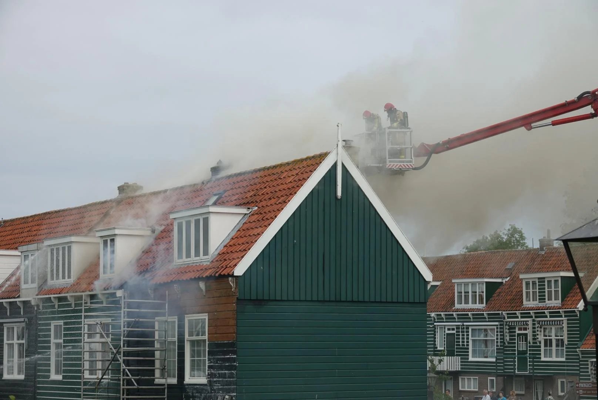

Brand op Marken geblust: twee monumentale woningen onbewoonbaar
Heel het eiland van slag
Op vrijdagochtend 4 september breekt er brand uit in een houten huis op de Kets op Marken. Een penibele situatie want het huis is omringd met andere houten huizen en het waait ook nog. De brandweer rukt uit en schaalt snel op zodat er in korte tijd veel brandweerauto’s door Waterland naar Marken rijden. Omroep PIM wacht het sein brand meester af om niemand voor de voeten te lopen en gaat ter plaatse kijken.
Het gaat om een hoekhuis en er zijn gelukkig geen gewonden. Het huis kan niet betreden worden, het huis ernaast ook niet door rook- en waterschade en het derde huis heeft waterschade en wordt nog bekeken. De bewoners zijn opgevangen door Salvage en de burgemeester. De mensen van Salvage zorgen voor vervangende woonruimte en eerste benodigdheden.
Enorm veel brandweer opgeroepen
De voorlichter, Jason Doorson, geeft aan dat diverse korpsen uit de omgeving zijn betrokken. Ook de ambulance, mochten er slachtoffers door de rook zijn. Liander schakelt de stroom uit. En handhavers zorgen ervoor dat de toeristen op afstand blijven. Er was genoeg water om te blussen. Het bluswater kwam uit zowel de sloot als de haven.
De oorzaak van de brand was Doorson nog niet bekend, wel dat er werkzaamheden werden uitgevoerd. Voor de bewoners die hun huis en spullen door de brand verteerd zagen gaan is het verschrikkelijk. Gelukkig kon de brandweer voorkomen dat er veel meer huizen getroffen werden.